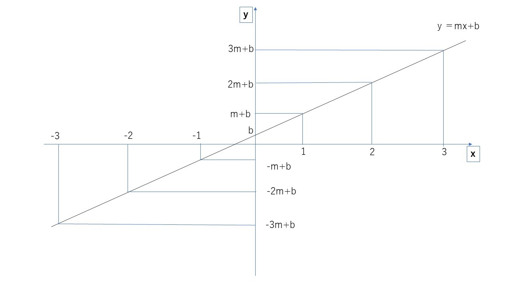
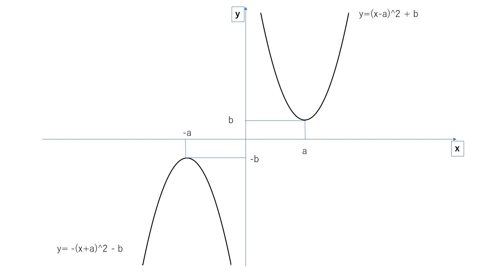
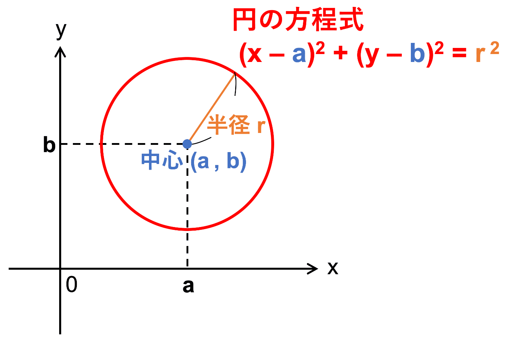

0.ゲーム数学入門（α版） / 14. ゲーム数学超入門まとめ（Zenn から 2026-10-30 に保存。本文の最終更新 2025-07-10T14:40:14.381+09:00）
ゲーム数学超入門まとめ
全体まとめ
基礎計算
累乗根の計算
(\sqrt{X})^2 = X\\
(\sqrt[a]{X})^a = X\\
\sqrt[a]{X} = X^\frac{1}{a}\\
X^{-a} = \frac{1}{X^a}\\
X^a * X^b = X^{a+b}\\
(X^a)^b = X^{ab}
点と座標
中点の座標
A(2,1)とB(1,-2)の中点
C(\frac{2+1}{2},\frac{1-2}{2}) =C(\frac{3}{2},-\frac{1}{2})

n点間の中点
A(2,1)とB(1,-2)とC(-2,2)とD(-4,-2)の中点
E(\frac{2+1-2-4}{4},\frac{2+1-2-4}{4})
= E(-\frac{3}{4},-\frac{1}{4})

2点間の距離の公式
2点間の距離をL, 2点をA(Ax,Ay) B(Bx,By)とすると、
L = \bf{\sqrt{(Ax-Bx)^2+(Ay-By)^2}}

方程式
直線の方程式

放物線の方程式
y=\pm(x-a)^2+b (a:xの初期値, b:yの初期値)

円の方程式
中心(a,b), 半径r\\
(x-a)^2+(y-b)^2 = r^2

円の当たり判定
\textcolor{red}{『中心から中心までの距離』 ≦ r+R}

三角比
ラジアン(弧度法)
\bm{ラジアン[rad] = 円の孤の長さ(L) ÷ 円の半径(R)}

円周率(π - パイ)
\bm{π[rad] = 180度 = 3.14159265359....}
三角比

\bm{sinθ = 角度θの時『斜辺を掛けると高さが出る』値}\\
\bm{cosθ = 角度θの時『斜辺を掛けると底辺が出る』値}\\
\bm{tanθ = 角度θの時『底辺を掛けると高さが出る』値}
特に覚えておくべき三角比

sin\frac{π}{6} = \frac{1}{2},
cos\frac{π}{6} = \frac{\sqrt{3}}{2},
tan\frac{π}{6} = \frac{1}{\sqrt{3}}\\
sin\frac{π}{4} = \frac{1}{\sqrt{2}},
cos\frac{π}{4} = \frac{1}{\sqrt{2}},
tan\frac{π}{4} = 1\\
sin\frac{π}{3} = \frac{\sqrt{3}}{2},
cos\frac{π}{3} = \frac{1}{2},
tan\frac{π}{3} = \sqrt{3}\\
単位円の三角比

\bm{cosθ = x座標}\\
\bm{sinθ = y座標}
三角比の性質
\bm{tanθ = \frac{sinθ}{cosθ}}\\
\bm{(sinθ)^2 + (cosθ)^2 = 1}
式の作成
文章中に出てくる単語の関係を1つ1つ数式に落とす必要がある。
例
太郎君はお小遣いを1000円持っており、駄菓子屋にお菓子を買いに行きました。100円のチョコレートを2個。50円のガムを3個買いました。太郎君のお小遣いはいくら残っているでしょうか。
(太郎君の残りのお小遣い) = (太郎君の元々のお小遣い) \\
- (チョコレートの金額)×(チョコレートの個数)\\
- (ガムの金額)×(ガムの個数)
まとめ
ここまでの内容はゲーム数学を学びだすうえでの必須知識と言えます。
『勉強したので知ってる』ではなく、『当然の常識』となるまで何度でも繰り返して欲しいです。
さぁ、ゲーム数学はここからです！ 楽しさを見いだせるのもここからです！！
頑張っていきましょう！！！